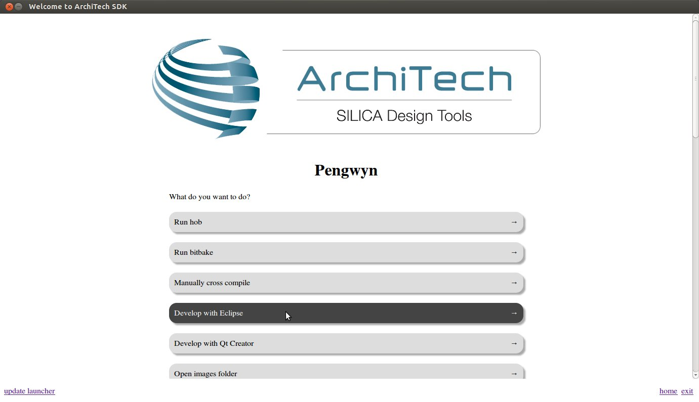
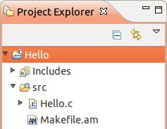
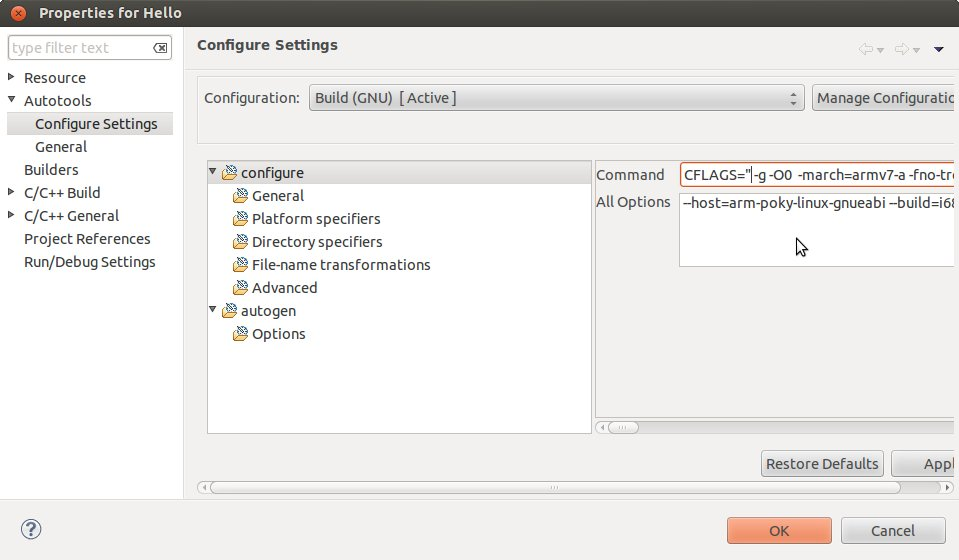

Table Of Contents
- Installing the Virtual Machine
- How to use Poky
- How to customize u-boot
- How to customize the Linux Kernel
- How to create the SD card
- How to write the NAND memory
- How to use HOB
- How to configure Minicom
- How to write a software application for the Pengwyn board
- Qt SDK
- Hardware
- Opkg Basics
- How to add 3”5 display with touch screen
How to write a software application for the Pengwyn board¶
Hereafter, the operating system that runs the IDE/debugger will be named host machine, and the board being debugged will be named target machine. The host machine could be running as a virtual machine guest operating system, anyway, the documentation for the host machine running as a guest operating system and as host operating system is exactly the same.
Pay attention before to start writing your application you need:
- a filesystem (you can use bitbake/hob to build your preferred filesystem) with develop support (that is, it must include all the necessary header files, the tcf-agent program and gdbserver)
- an SD card already partitioned, with the bootloader in the FAT partition, and
- a network connect between the host machine and the target machine.
Creating the Project¶
You can create two types of projects: Autotools-based, or Makefile-based. This section describes how to create Autotools-based projects from within the Eclipse IDE. Launch Eclipse using Architech Splashscreen just click on Develop with Eclipse.
To create a project based on a Yocto template and then display the source code, follow these steps:
- Select File→New→Project...
- Under C/C++, double click on C Project to create the project.
- Expand Yocto ADT Project.
- Select Hello World ANSI C Autotools Project. This is an Autotools-based project based on a Yocto Project template.
- Put a name in the Project name: field. Do not use hyphens as part of the name.
- Click Next.
- Add information in the Author and Copyright notice fields.
- Be sure the License field is correct.
- Click Finish.
Note: If the “open perspective” prompt appears, click Yes so that you enter in the C/C++ perspective. The left-hand navigation pane shows your project. You can display your source by double clicking the project’s source file.
Building the Project¶
To build the project, select Project→Build Project. The console should update with messages from the cross-compiler. To add more libraries to compile:
- Click on Project→Properties.
- Expand the box next to Autotools.
- Select Configure Settings.
- In CFLAGS field, you can add the path of includes with -Ipath_include
- In LDFLAGS field, you can specify the libraries you use with -lname_library and you can also specify the path where to look for libraries with -Lpath_library
Note: All libraries are located in ~/architech_sdk/architech/pengwyn/sysroot subdirectories.
Deploying and Debugging the Application¶
Connect the Pengwyn board to the PC by means of a usb cable to power the board and to have the serial console

Once you built the project and the board is running the image, use minicom (refer to section Usb-Serial to know how to configure minicom) to run tcf-agent program in target board:
Yocto (Built by Poky 7.0.1) 1.2.1
ttyO0
pengwyn login: root
root@pengwyn:~# ifconfig eth0 192.168.0.10Test the ethernet:
ping 192.168.0.100If the output is similar to this one:
64 bytes from 192.168.0.100: icmp_req=1 ttl=64 time=0.946 ms
64 bytes from 192.168.0.100: icmp_req=2 ttl=64 time=0.763 ms
64 bytes from 192.168.0.100: icmp_req=3 ttl=64 time=0.671 ms
64 bytes from 192.168.0.100: icmp_req=4 ttl=64 time=0.793 msthe ethernet connection is ok, then run command:
/etc/init.d/tcf-agent restartOn the Host machine, follow these steps to let Eclipse deploy and debug your application:
- Select Remote System Explorer perspective.
- In Remote System area right-click TCF icon and select Property.

- In Host tab, insert in Host Name and Connection Name fields the IP address of the target board. (e.g. 192.168.0.10)

- Then press OK.
- Select Run→Debug Configurations...
- In the left area, expand C/C++Remote Application.
- Locate your project and select it to bring up a new tabbed view in the Debug Configurations Dialog.
- Use the drop-down menu now in the Connection field and pick the IP Address you entered earlier.
- Enter the absolute path on the target into which you want to deploy the application. Use the Browse button near Remote Absolute File Path for C/C++Application: field. No password is needed.
- Enter also in the path the name of the application you want to build. (e.g. Hello)

Important
If debug does not works, check if tcf-agent is running on the board and gdbserver is present.

With F6 key you can execute the application step by step. You can see the target output in the eclipse console view